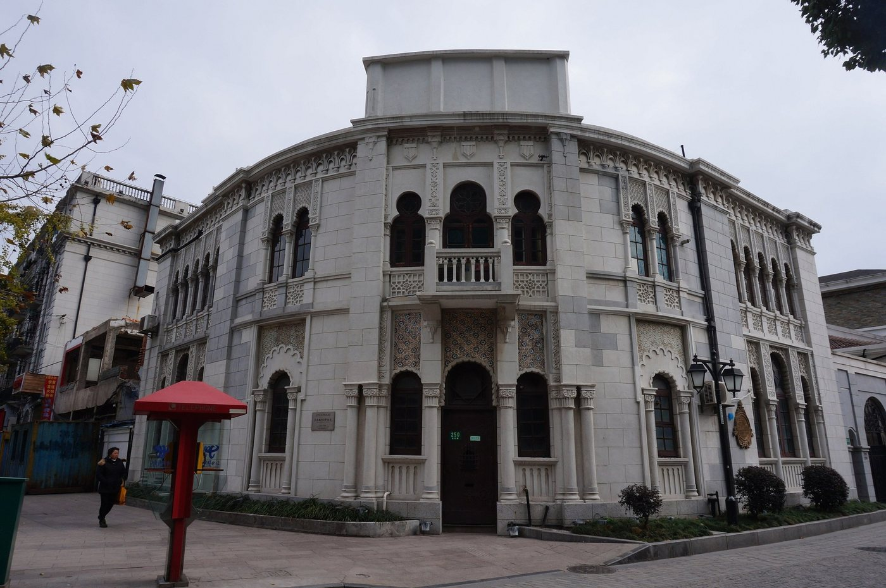
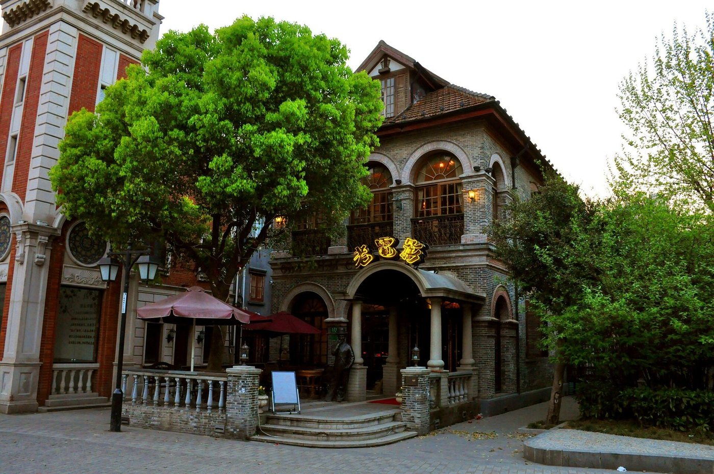
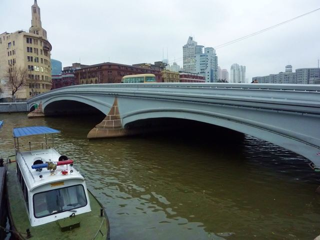

Victory Cinema and Duolun Road: a Hongkou afternoon with a story 胜利电影院（乍浦路408号）与多伦路
Old cinema · Hongkou
LikelyNo screening timetable · 18 Nov 2026



Go by day for a 550 m street of 1930s villas, then an old cinema. Screenings are unconfirmed.
No screening timetable
The evidence for this one has a gap. Check on the day or call ahead.
Why it matters
Victory Cinema opened in 1928 as the Hollywood Theatre (Chinese Wikipedia says 1929); Yicai reports Lu Xun watched films there dozens of times in 1927-37 (single source). It reopened on 26 October 2023 after restoration. Duolun Road is where the Left-Wing Writers' League was founded on 2 March 1930.
What to see
The cinema's Chinese-style rooftop tower and facade; on Duolun Road, Hongde Church (No. 59), 1930s villas, the Left-Wing League memorial and writers' footprint plaques. View from outside: interior hours unknown. About 400 m west, the new free Shanghai Literature Museum (上海文学馆, entrance 武进路455号; opened 27 Aug 2026; 9:30-17:30, last entry 17:00, closed Mondays; hours from one report, check Amap) has a Left-wing Shanghai zone.
How to get there
Taxi to 胜利电影院 (乍浦路408号); look at the facade and any posted programme. Duolun Road: taxi to 多伦路 (entrance on Sichuan North Road).
Local tip
Treat this as a daylight half-day, not an evening. The taxi hop between Duolun Road and the cinema is about 2.5 km.
Watch out
Screenings are not confirmed for 2026: check the Grand Light Circuit (大光明院线) listing the day before. Hongde Church and the old villas are working institutions: view from the street. The Lu Xun theme bus ended 18 Oct 2026.
What was checked, and what was not
Read on 18 Nov 2026
The Paper (5 Jan 2026) lists Victory Cinema among the street's current businesses, with its operator named. Hongkou government (27 Sep 2024): Film and TV Street opened at the cinema. Duolun Road and League facts checked. The Hongkou government guide of 7 Sep 2026 and the 28 Apr 2026 notice on the League memorial were read 18 Nov 2026.
Not checked
No 2026 screening timetable or price. Whether the League memorial reopened after its spring 2026 repairs; the 2026 opening hours of Hongde Church and the Duolun Museum of Modern Art. Lu Xun's film-going rests on one source (Yicai). Metro stops are not map-checked.
Sources
Nearby

